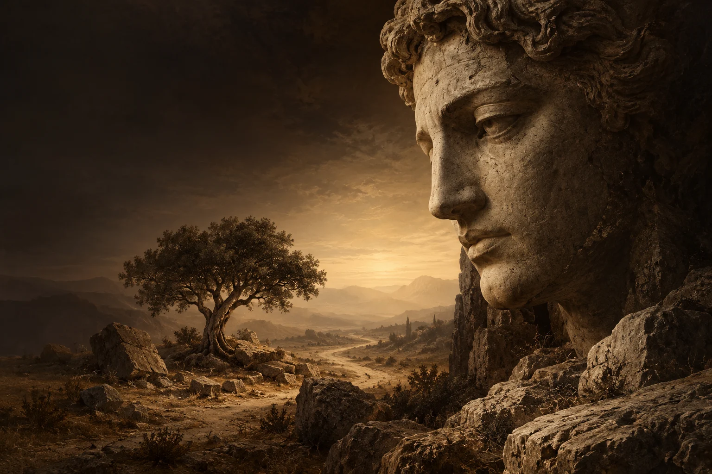
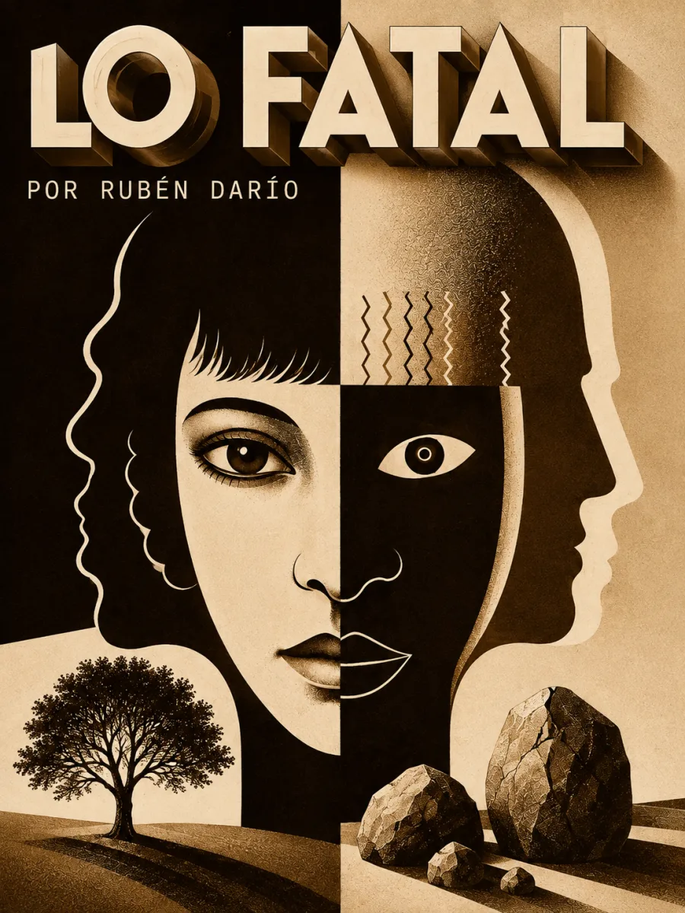

Audiolibros · Cuarta Ola
Lo fatal
Rubén Darío · Cantos de vida y esperanza · 1905
El peso de saberse vivo.
El árbol siente apenas.
La piedra no conoce el miedo.
La conciencia pregunta sin encontrar descanso.

Una pregunta que permanece.
Volumen

La conciencia y su intemperie
El poema comienza envidiando al árbol y a la piedra. Lo que habitualmente parece una carencia —sentir menos, no saber— se convierte aquí en alivio frente al dolor de la conciencia. La voz no ofrece una explicación del mundo: enumera el temor, el deseo y la incertidumbre de estar en él.
La piedra no necesita una respuesta. Quien habla no puede dejar de buscarla.
La repetición de «y» acumula inquietudes sin resolverlas. La atracción de la carne y la espera de la tumba se enfrentan mediante imágenes vegetales; después, los dos versos finales se acortan y dejan la voz ante su origen y su destino desconocidos. Proponemos escuchar ese cambio de extensión como un quiebre de la respiración, no como una conclusión tranquilizadora.
Cierra Cantos de vida y esperanza (1905), en «Otros poemas», XLI, con dedicatoria a René Pérez. Consta de 13 versos. Texto y edición · Biblioteca Virtual Miguel de Cervantes. La imagen superior es una composición simbólica; el rostro esculpido no representa a Darío ni una pieza arqueológica identificada.
La lectura
Poema completo
Una lectura continua. Claves de escucha: el contraste inicial, la acumulación de «y» y el acortamiento de los versos finales. Grabación pendiente de incorporación.
Reseñas

Excelente